El oficio del framing en tu teléfono · Closed test
Lo que jala, te lo afirmamos. Lo que viene, te lo etiquetamos. Cada claim en esta página es de la versión más nueva, verificada en teléfono real — sin humo.
La primera vez que metes tu proyecto, la app lo recuerda pa' la próxima obra.
Qué jala y qué no — la listaDevice-verified · La más nueva
Verificado en teléfono real, en obra. Si está en esta lista, lo puedes usar hoy.
Cómo leer el paquete de ingeniería, la secuencia del izaje y las trampas que cuestan la inspección. Con la cita del BCSI a la vista y quién lo dice — y si a una le falta segunda fuente, la app te lo marca en vez de callárselo.
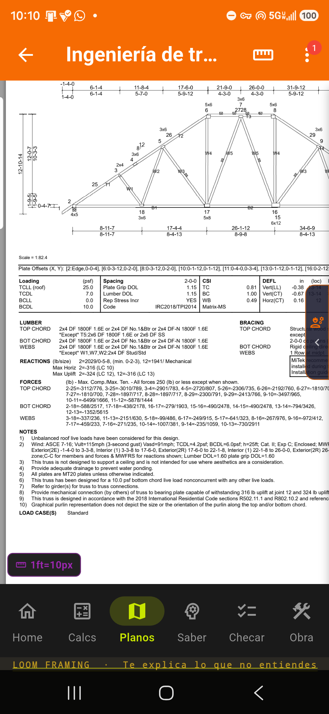
La app no te cambia el idioma porque el sistema esté en otro. El framero que trae el Android en inglés — o sea casi todos — la lee en español de corrido, con los trade terms donde van.
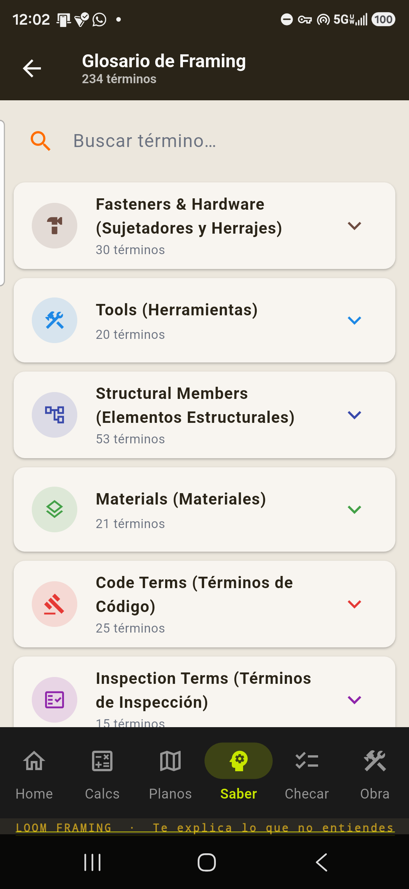
El teclado canon: tres paneles (pies / pulgadas / fracción) + el sistema "plus". Piensa como el framero, no como una calculadora de escuela.
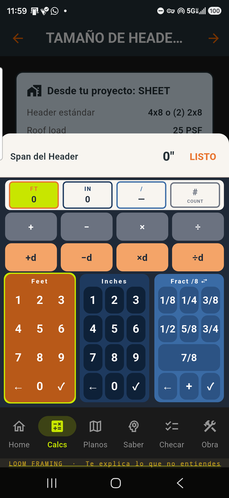
Le das tap al resultado y ves el paso: el pitch, la deducción, el código que lo respalda. Chécale las cuentas a Loom igual que le checarías las cuentas a un compa.
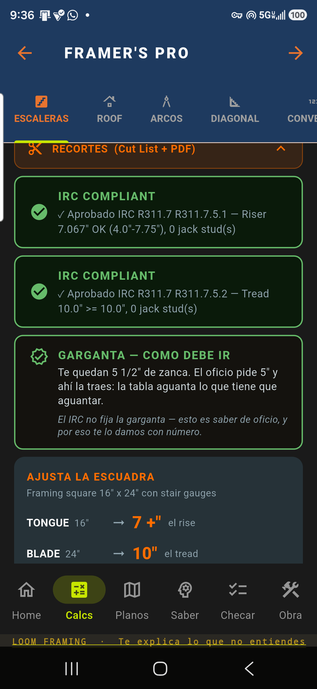
Abres el Header Sizing y ya trae los datos de tu proyecto. La app te pregunta la condición de carga — Solo Techo o Techo + Piso — porque el span cambia según eso.
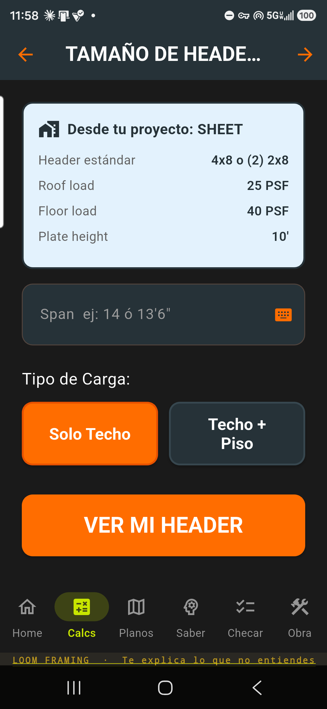
Rafters, headers, studs, stairs, OC layout y más — y la cut list de pared saca su plan de corte en modo jobsite: cada grupo con su medida y de qué stock sale, y le vas palomeando pieza por pieza parado en la sierra. Resultado al toque.
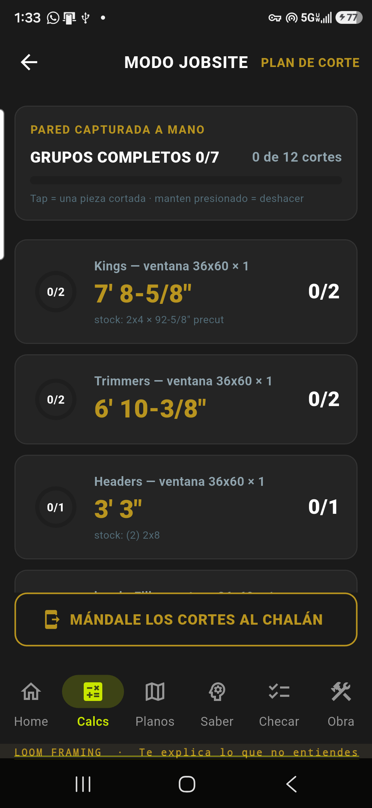
Pre-Inspección en siete categorías — Fundación, Piso, Framing, Headers, Shear, Techo y Escaleras — 29 puntos, cada uno con su código IRC 2018, y tu avance se guarda solo.
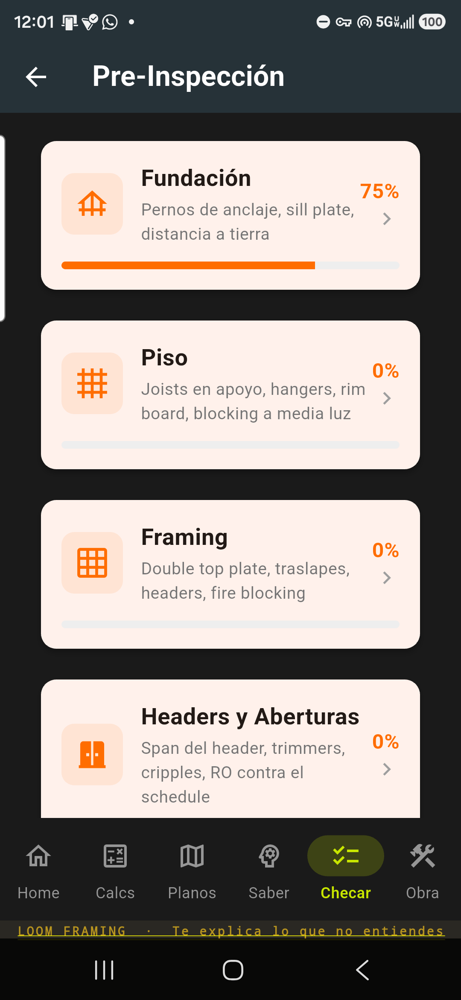
Saber: Manual 111 artículos · Glosario 234 términos · Pro Tips 105 con su porqué · IRC · Trusses. La escuela del oficio en tu bolsa — bilingüe, 100% offline.
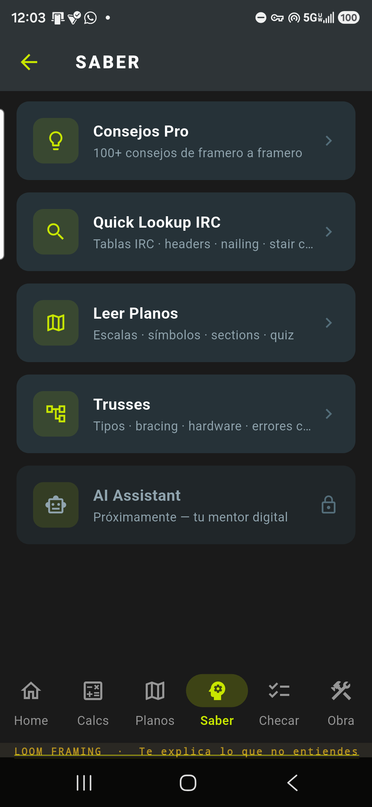
Capturas la pared y sale la cut list, con el porqué de cada pieza: header al plate, sándwich por material, kings precut. La confirmas y se la mandas al chalán pa' que le entre a la sierra. Verificado en device.
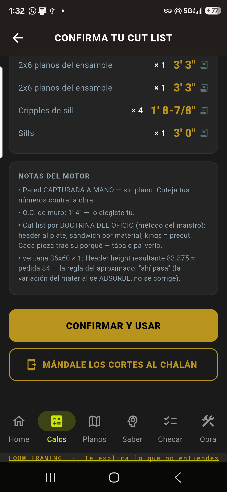
Herramientas por familia, consumibles del trailer, lumber yards, trusses, rentas, grúas que vuelan trusses e inspectores — 82 recursos curados, con teléfono, mapa y web.
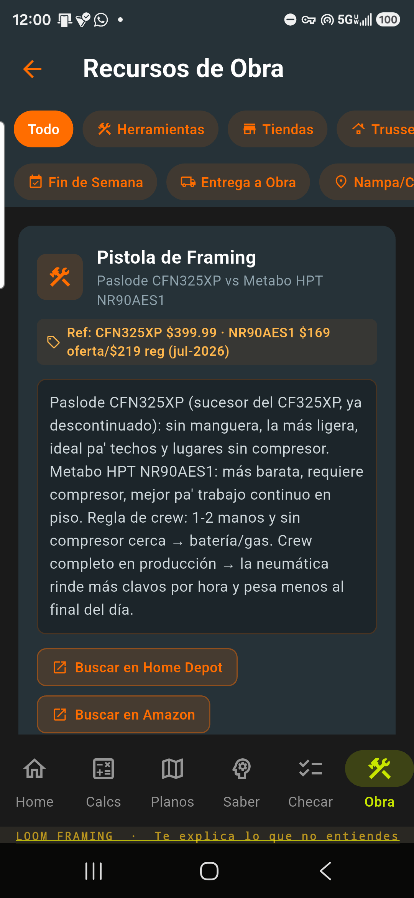
Roof suite: hip y valley regular + bastard, y el valley irregular dual-pitch — con los cortes exactos, verificado en teléfono real.
El visor arma el juego del proyecto: el plano de la casa + el truss layout + la ingeniería de cada truss, y regresa a cada papel justo donde lo dejaste. Con buscador de trusses: tecleas, filtra y te lleva a la hoja.
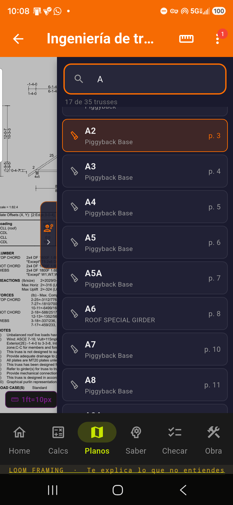
Sin señal en la obra, no hay bronca. Todo corre en el teléfono, en español o inglés, con los trade terms como se dicen.
Autoridad · IRC 2018
Cada header sale de IRC 2018 · Table R602.7(1) — la misma tabla que usa tu inspector de Idaho. No es un número de app: es la tabla del código, aplicada a tu zona y tu obra.
Ejemplo real:
Techo con cielo raso · zona 50 psf · casa de 24 ft · Header 2x10 = 71″ según IRC 2018 · Table R602.7(1).
Sin arriostre lateral, baja a 50″ (Nota f). Loom te lo dice antes de que cortes.
Tu zona de nieve manda el número:
| Zona (techo · casa 24 ft) | 2x8 | 2x10 | (2)2x12 | (3)2x12 |
|---|---|---|---|---|
| 30 psf · Boise | 69″ / 48″ | 82″ / 57″ | 97″ / 68″ | 121″ / 85″ |
| 50 psf · Magic Valley | 60″ / 42″ | 71″ / 50″ | 83″ / 58″ | 104″ / 73″ |
| 70 psf · norte / montañas | 53″ / 37″ | 63″ / 44″ | 74″ / 52″ | 93″ / 65″ |
Span arriostrado / sin arriostre · IRC 2018 · Table R602.7(1) · Nota f. La nota-f aplica de 2x8 en adelante.
Roadmap · lo que viene
No vaporware. Cada cosa con su etiqueta de qué tan cerca está. Te avisamos cuando jale.
Que le des tap a cualquier número y veas de dónde salió — de tu plano, hoja por hoja, con tu corrección que gana y persiste. Es la estrella del roadmap. Todavía no la dibuja el build; la prometemos etiquetada como promesa.
Hoy te abre el PDF y lo organiza por hojas. La lectura estructural completa está en desarrollo — la mostramos cuando lea bien.
Un chat framero que cita el IRC — no un ChatGPT genérico. El motor ya existe; el chat en la app viene en un próximo release.
Cada cosa con su etiqueta
Verificado en teléfono real. Úsalo hoy en la obra.
Jala, pero andamos afinando detalles antes de afirmarlo.
A medias. Lo ves en la app pero no está completo.
Encontramos un fallo y lo estamos arreglando. No lo uses pa' decisiones todavía.
No existe todavía. Roadmap — promesa etiquetada como promesa.
Color + forma juntos (círculo / rombo / triángulo / cuadrado / anillo punteado) — legible pa' daltónicos y a sol directo.
El closed test está abierto. Tu reporte moldea la herramienta antes de que salga. No es cupo — es la meta que abre la puerta.
Éntrale al closed test →Quién la hace
Jesús · framero
"La herramienta que yo hubiera querido en la bolsa. De compa a compa."
Guía gratis
El framero completo
Las 10 marcas del oficio — mente, cuerpo, voluntad y alma — en una hoja pa' traer en la troca.
Guía gratis: El framero completo